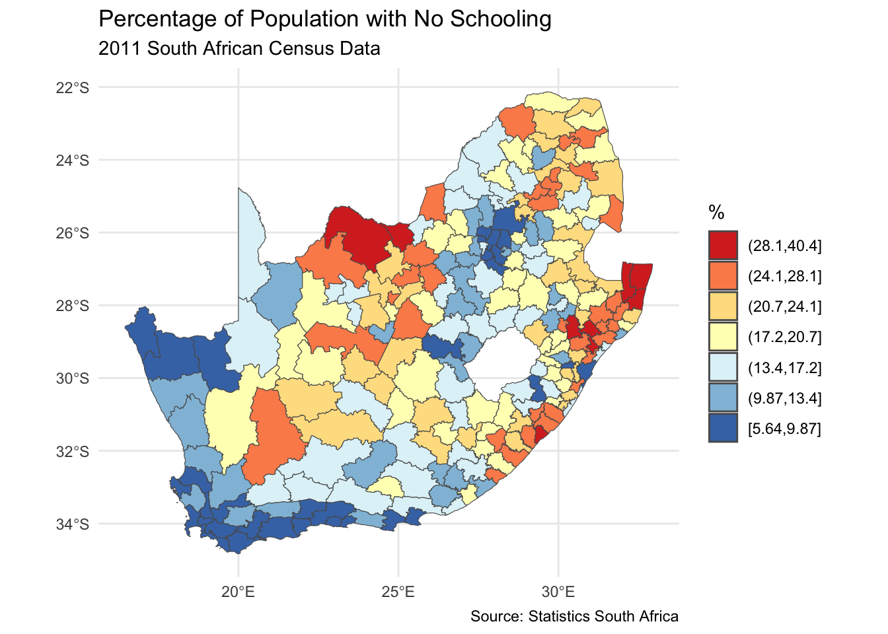
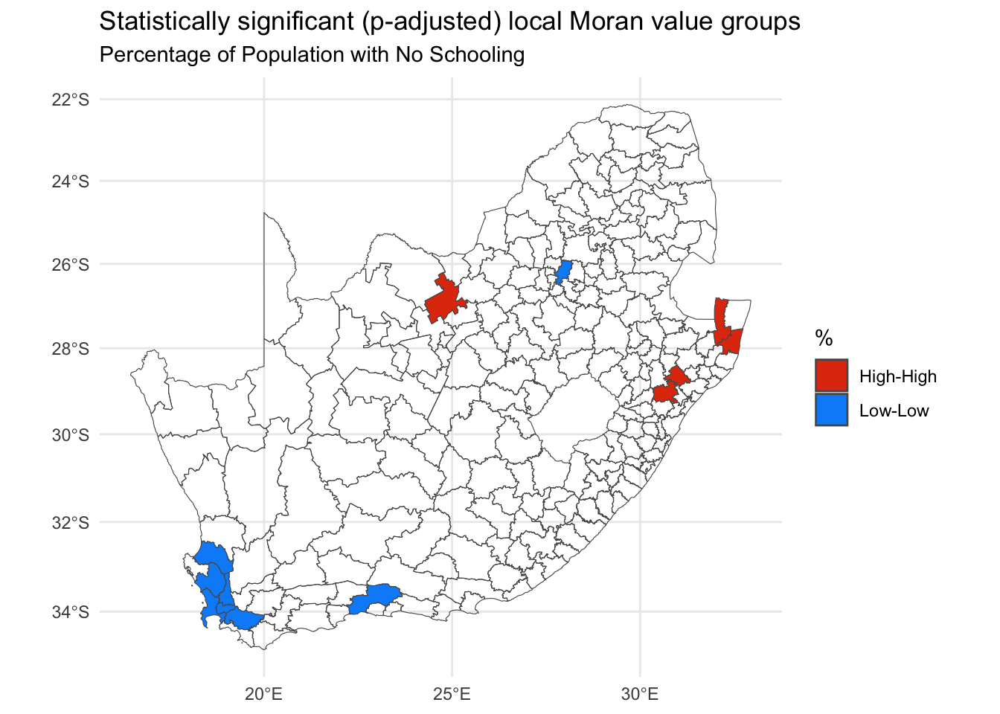

We begin by recreating one of the maps from the previous session. You may wish to change your working directory to be the same as previously if it is not already.
Code
installed <-installed.packages()[,1]required <-c("tidyverse", "sf", "RColorBrewer", "classInt", "ggplot2")install <- required[!(required %in% installed)]if(length(install)) install.packages(install, dependencies =TRUE)require(tidyverse)require(sf)require(RColorBrewer)require(classInt)require(ggplot2)if(!file.exists("municipal.RData")) download.file("https://github.com/profrichharris/profrichharris.github.io/blob/main/MandM/workspaces/municipal.RData?raw=true", "municipal.RData", mode ="wb")load("municipal.RData")brks <-classIntervals(municipal$No_schooling, n =7, style ="jenks")$brksmunicipal$No_schooling_gp <-cut(municipal$No_schooling, brks, include.lowest =TRUE)ggplot(data = municipal, aes(fill = No_schooling_gp)) +geom_sf() +scale_fill_brewer("%", palette ="RdYlBu", direction =-1) +theme_minimal() +theme(axis.title.x =element_blank(), axis.title.y =element_blank()) +guides(fill =guide_legend(reverse =TRUE)) +labs(title ="Percentage of Population with No Schooling",subtitle ="2011 South African Census Data",caption ="Source: Statistics South Africa" )

Looking at the map, the geographical patterning of the percentage of the population with no schooling appears to be neither random nor uniform, with a tendency for similar values to be found in closely located municipalities, creating clusters of red and of blue values (and of yellow too). However, simply ‘eye-balling’ the map to look for patterns isn’t very scientific and it can be very deceptive. You can probably see patterns in the following map, too, but they arise from an entirely random permutation of the previous map’s data.
Moran’s test
The classic way of quantifying how similar places are to their neighbours is to calculate the Moran’s statistic, which is a measure of spatial autocorrelation – of how much the values of a variable exhibit spatial clustering of alike values (positive spatial autocorrelation) or of ‘opposite’ values (negative spatial autocorrelation). We can calculate this statistic in R using the spdep package. We will slice out area 128 from the analysis as this is the one with an invalid geometry (see previous session and try which(!st_is_valid(municipal)) to confirm).
Code
if(!("spdep"%in% installed)) install.packages("spdep", dependencies =TRUE)require(spdep)municipal %>%slice(-128) -> municipal
Creating a neighbours list
The first step is to define neighbours. In the following example, these are places that share a border (which are contiguous). Presently it is sufficient for them to meet at a single point. If the requirement is that they share an edge not merely a corner then change the default argument from queen = TRUE to queen = FALSE (see ?poly2nb for details).
Code
neighbours <-poly2nb(municipal)
The summary of neighbours reveals that, on average, each South African municipality has 5.2 neighbours but it can range from 1 (the 182nd region in the municipal data) to 10 (region 69). The most frequent number is 6.
Code
summary(neighbours)
Neighbour list object:
Number of regions: 233
Number of nonzero links: 1210
Percentage nonzero weights: 2.228812
Average number of links: 5.193133
Link number distribution:
1 2 3 4 5 6 7 8 9 10
1 8 22 43 51 70 30 3 4 1
1 least connected region:
182 with 1 link
1 most connected region:
69 with 10 links
The neighbours of region 69 are,
Code
neighbours[[69]]
[1] 60 64 68 138 152 153 156 157 163 164
It is instructive to write the list of neighbours to an external neighbours file,
Code
write.nb.gal(neighbours, "neighbours.gal")
… which can then be viewed by using file.edit("neighbours.gal"). The file will look like the below and has a very simple format. The top line say there are 233 regions. Going down, the first of these has 4 neighbours, which are regions 13, 14, 15 and 16. The second has 6 neighbours, which are 3, 4, 8, 18, 188, 233, and so forth. The same information could be encoded in a \(233\times233\) matrix, where cell \((i, j)\) is given a value of one if \(i\) and \(j\) are considered neighbours, else zero. The problem with that approach is most of the matrix is sparse because most regions are not neighbours. It is quicker to state which regions are neighbours. The rest, by definition, are not.
These neighbourhood relationships can be viewed as a graph by extracting the coordinate points (st_coordinates()), of the centroids (st_centroid()), of the polygons that represent each municipality, and by using the plot functions for sf (simple features) and nb (neighbours list) objects. The argument of_largest_polygon = TRUE returns the centroid of the largest (sub)polygon of a MULTIPOLYGON rather than of the whole MULTIPOLYGON, a multipolygon being when one place is represented by multiple polygons (e.g. a mainland and an offshore island). Setting this argument to true means that the centroid will like within the boundary of the place, which isn’t otherwise guarenteed (e.g. it could be in the sea between the mainland and an island).
Code
coords <-st_centroid(municipal, of_largest_polygon =TRUE)pts <-st_coordinates(coords)par(mai =c(0, 0, 0, 0)) # Remove the margins and white space around the plotplot(st_geometry(municipal), border ="grey")plot(neighbours, pts, add = T)
Creating spatial weights
The neighbourhood list simply defines which places are neighbours. The spatial weights give a weight to each neighbourhood link. One motivation for doing this is to stop any statistic based on a sum across neighbourhood links to be dominated by those neighbourhoods with most neighbours. Moran is one such statistic. Hence, if a region has six neighbours, each of those is given a weight of \(1/6\). If it has four, \(1/4\), and so forth. This is called row-standardisation and is the default style in the conversion of a neighbourhood to a spatial weights list with the function nb2listw(). See ?nb2listw for alternative specifications.
Code
spweight <-nb2listw(neighbours)# Here are the neighbours of and weights for the first region:spweight$neighbours[[1]]
[1] 13 14 15 16
Code
spweight$weights[[1]]
[1] 0.25 0.25 0.25 0.25
Calculating the Moran’s value
Now we have the spatial weights, we can run a Moran’s test to measure the strength of spatial autocorrelation in the municipal$No_schooling variable.
Moran I test under randomisation
data: municipal$No_schooling
weights: spweight
Moran I statistic standard deviate = 13.968, p-value < 2.2e-16
alternative hypothesis: greater
sample estimates:
Moran I statistic Expectation Variance
0.576519069 -0.004310345 0.001729177
The Moran statistic is 0.577 and the 95% confidence interval is,
Code
z <-c(-1.96, 1.96)round(moran$estimate[1] + z *sqrt(moran$estimate[3]), 3)
[1] 0.495 0.658
Since the confidence interval does not include the expected value of -0.004, we can conclude that there is statistically significant positive autocorrelation in the variables – municipalities with higher percentages of no schooling tend to be surrounded by other municipalities with the same, and similarly, low values tends to be surrounded by other ones that are low.
The expected value is very close to zero so what we are almost saying is that because the confidence interval does not span zero so there is evidence of positive spatial autocorrelation. Although this is quite close to being true, to actually be correct would require that the expected value of the statistic is zero with no spatial autocorrelation. It isn’t. It is presently -0.004 and approaches zero as the number of observations increases: \(E(I) = -1 / (n - 1).\), where \(n\) is the number of observations.
Moran plot and local Moran values
Whilst there is positive spatial autocorrelation in the values overall, not everywhere is surrounded by similar values. The following plot has 4 quadrants marked upon it. The top right indicates places where both they and their average neighbour have above average values of municipal$No_schooling. We can describe these as high-high clusters on the map. The bottom left indicates places where they and their average neighbour have below average values. These are low-low clusters. Both the high-high and the low-low contribute to positive spatial autocorrelation because, for these, the places and their neighbours display similar values. The two other quadrants do not. In the top left are low-high clusters. In the bottom right are high-low. There reveal clusters of dissimilar values (negative spatial autocorrelation). In the chart, the high-high and low-low places are more plentiful than the low-high and high-low ones, hence the upwards sloping line of best fit and the positive Moran statistic.
Code
moran.plot(municipal$No_schooling, spweight)
It is straightforward to map which quadrant each place belongs to. First, we calculate the local Moran statistics proposed by Anselin (1995). A local statistic is one that applies to a subspace of the map, whereas a global statistic is a summary measure for the whole map. Anselin showed that the (global) Moran statistic can be decomposed into a series of local Moran values, each measuring how similar each place is (individually) to its neighbours. There are 233 municipalities in the data so there will be 233 local Moran values too.
Usefully, if we look at the attributes of localm, we discover an attribute named quadr which contains what we want and which can be mapped. In fact, it includes three different versions of what we might want, the differences being due to which average low and high are defined by (see below the section Value in ?localmoran).
ggplot(data = municipal, aes(fill = quadr$pysal)) +geom_sf() +scale_fill_discrete("", type =c("blue", "orange", "purple", "red")) +theme_minimal() +theme(axis.title.x =element_blank(), axis.title.y =element_blank()) +guides(fill =guide_legend(reverse =TRUE)) +labs(title ="Local Moran value groups",subtitle ="Percentage of Population with No Schooling" )
Unfortunately, the resulting map is somewhat misleading because not all of the local Moran values are statistically significant and some of the various high-high, low-low, etc. pairings my be only trivially alike or dissimilar. Looking at top of the local Moran data suggests a way of isolating those that are statistically significant and is adopted in the following map.
quadr[localm[,5] >0.05, ] <-NAggplot(data = municipal, aes(fill = quadr$pysal)) +geom_sf() +scale_fill_discrete("", type =c("blue", "orange", "purple", "red"), na.value ="grey80") +theme_minimal() +theme(axis.title.x =element_blank(), axis.title.y =element_blank()) +guides(fill =guide_legend(reverse =TRUE)) +labs(title ="Statistically significant local Moran value groups",subtitle ="Percentage of Population with No Schooling" )
Arguably, this new map may still not apply a strict enough definition of statistical significance because the issue of repeat testing has not been tackled. Remember, there are 233 places, 233 local Moran values and therefore 233 tests of significance. The p-values can be adjusted for this using R’s p.adjust() function. The following example uses a false discovery rate method (method = fdr) but other alternatives include method = bonferroni. A question is whether this is now too strict given that there are not 233 independent tests. Rather, the data have overlapping geographies (places share neighbours) as well as spatial dependencies.
Code
quadr[p.adjust(localm[,5], method ="fdr") >0.05, ] <-NAggplot(data = municipal, aes(fill = quadr$pysal)) +geom_sf() +scale_fill_discrete("", type =c("blue", "red"), na.value ="grey80") +theme_minimal() +theme(axis.title.x =element_blank(), axis.title.y =element_blank()) +guides(fill =guide_legend(reverse =TRUE)) +labs(title ="Statistically significant (p-adjusted) local Moran value groups",subtitle ="Percentage of Population with No Schooling" )
Issues with the Moran statistic
How to define neighbours?
Any statistic that includes spatial weights is dependent upon how those weights are defined: how, then, to decide which places are neighbours and also how much weight each neighbourhood connection is given in the calculation? The calculations above use first order contiguity (places that share a boundary) but we could extend that definition to include neighbours of neighbours (or more):
Code
neighbours <-nblag(neighbours, maxlag =2)par(mai =c(0, 0, 1, 0))par(mfrow =c(1,2)) # Plot graphics in a 1 row by 2 column gridplot(st_geometry(municipal), border ="grey", main ="First order contiguity")plot(neighbours[[1]], pts, add = T)plot(st_geometry(municipal), border ="grey", main ="Second order contiguity")plot(neighbours[[2]], pts, add = T)
Changing the definition of neighbours does, of course, change the Moran statistic and it will change the local Moran values too.
Moran I statistic Moran I statistic
0.5765191 0.3883236
There is no particular reason to stick with a contiguity-based definition. We could, for example, look for the \(k\) nearest neighbours (or, more precisely, the \(k\) nearest centroids to the centroid of each region), as in the two examples below.
The function knearneigh() contains the default argument, longlat = NULL. It should be ok not to change this here to longlat = TRUE because it ought to pick this up from coords’s coordinate reference system. If you suspect it isn’t or if coords is simply a matrix of point coordinates, not an explicitly spatial object, change the default argument to longlat = TRUE.
Code
par(mai =c(0, 0, 1, 0))par(mfrow =c(1,2))neighbours <-knn2nb(knearneigh(coords, k =5))plot(st_geometry(municipal), border ="grey", main ="Five nearest neighbours")plot(neighbours, pts, add = T)neighbours <-knn2nb(knearneigh(coords, k =10))plot(st_geometry(municipal), border ="grey", main ="Ten nearest neighbours")plot(neighbours, pts, add = T)
In fact, we can run through all the possible values of \(k\) (from \(1\) to \(k_{max} = (n - 1)\) where \(n\) is the number of municipalities) and consider the Moran statistics that they generate. The resulting chart shows that the statistic is highly dependent on the scale of the analysis: as \(k\) increases, neighbourhood relationships extend over an increasing portion of the map, and the statistic tends to decline. It declines because nearby places tend to have similar values whereas those that are further away are more varied.
The code will generate a lot of warning messages. You can ignore them. They are warning you that \(k\) has become a large subset of all \(n\).
Code
n <-nrow(municipal)y <-sapply(1: (n-1), \(k) {knearneigh(coords, k) %>% knn2nb %>% nb2listw %>%moran.test(municipal$No_schooling, .) -> moran moran$estimate[1]})ggplot(data.frame(k =1:(n-1), y = y), aes(x = k, y = y)) +geom_line() +ylab("Moran statistic")

In principle the chart could be used to identify an ‘optimal’ value of \(k\). Unfortunately, the present case offers few clues as to what that optimal value should be. The p-value for these statistics is not shown but is least when \(k = 27\). That might be a justification, of sorts, for choosing \(k = 27\) but it is splitting hairs somewhat when all the p-values are tiny and well below \(p = 0.001\).
Other ways of defining neighbours include whether they lie within a lower or upper distance bound of each other: see ?dnearneigh and this vignette on Creating Neighbours.
How to interpet the I statistic
Conceptually, the Moran statistic is easy to understand: it is a (global) measure of the correlation between the values of a variable at a set of locations, and the value of the same variable for those locations’ neighbours. More simply, it is the correlation between locations and their neighbours.
Except it isn’t. Or, rather, it is a measure of correlation, just not the more commonly used Pearson correlation. The difference is evident in the following comparison where the Moran value is almost half the Pearson correlation between locations and their average neighbour (where the value for the average neighbour is calculated using last.listw()).
As Brunsdon and Comber note, the value of Moran’s I is not constrained to be in the range from -1 to +1 but changes with the spatial weights matrix. Following, Jong et al. (1984, p. 20), the extremes for the current spatial weights are,
Code
listw2mat(spweight) %>%range(eigen((. +t(.)) /2))
[1] -0.3985514 1.0317251
Not only is this not in the range -1 to 1, it is not symmetric around the expected (null) value of -0.004.
Personally, I am not persuaded that the global Moran’s value is preferable to the more readily interpreted Pearson correlation between locations and their average neighbour. That correlation with \(k = 30\) nearest neighbours was calculated above and is 0.637. A confidence interval for this can be calculated using a permutation approach, for example. Given the geography of the South African municipalities, their neighbourhood relations and given the data values, then permuting those values randomly 1000 times around the municipalities generates a 95% confidence interval that the correlation is a long way out of, indicating the positive autocorrelation to be significant. (A permutation approach is also available for the global and local Moran statistics: see ?moran.mc and ?localmoran_perm.)
Code
n <-length(municipal$No_schooling)sapply(1:1000, \(x) {sample(municipal$No_schooling, n) %>%cor(lag.listw(spweight, .))}) %>%quantile(prob =c(0.025, 0.975))
2.5% 97.5%
-0.2347859 0.1271044
Getis and Ord G-Statistic
A different method for identifying ‘hot’ or ‘cold spots’ of a variable is provided by the G-statistic. As Brunsdon and Comber observe, the statistic – which is a local statistic, calculated for each location in turn – is based on the proportion of the total sum of standardised attribute values that are within a threshold distance, \(d\), of each area centroid. Looking at the map below, which is of South African wards (simplified slightly from this source), we may suspect there are clusters of places with greater percentages of their populations having relatively high incomes and that these are spatial anomalies. Because the percentages are extremely skewed, they have been plotted with a square root transformation applied to the scale of the map (trans = "sqrt") – notice how the values 0 to 4% (which are the original values, not the square roots) occupy more of the legend than the values 4 to 8 do, and so forth.
Code
download.file("https://github.com/profrichharris/profrichharris.github.io/blob/main/MandM/workspaces/wards.RData?raw=true", "wards.RData", mode ="wb", quiet =TRUE)load("wards.RData")ggplot(data = wards, aes(fill = High_income)) +geom_sf(colour ="transparent") +scale_fill_distiller("%", guide ="colourbar", direction =1, trans ="sqrt",palette ="Reds") +theme_minimal() +theme(axis.title.x =element_blank(), axis.title.y =element_blank()) +labs(title ="Percentage of Population with income R614401 or greater",subtitle ="2011 South African Census Data",caption ="Source: Statistics South Africa" )
The G-statistic requires a binary spatial weights (style = "B", below), whereby locations either are or are not within the threshold distance of each other. The following has a threshold distance of 20km. Not all of the ward centroids will be within 20km of another which creates situations of zero neighbours, which is tolerated by setting zero.policy = TRUE in the conversion from a neighbours to spatial list.
As with the function knearneigh(), dnearneigh() has the default argument, longlat = NULL, which should not need changing here to longlat = TRUE because it ought to pick this up from coords’s coordinate reference system. However, don’t take this for granted.
Having calculated the local G values, we can map them, using a manually generated fill palette. The argument na.translate = F removes the NA values from the legend but not from the map, wherein they are shaded white (na.value = "white"). The G values are also standardised z-values, hence values of 1.96 or greater are relatively rate if the assumption that the statistic is Normally distributed is warranted. (If it isn’t, consider using localG_perm.)
Code
brks <-c(min(wards$localG, na.rm =TRUE), -1.96, 1.96, 2.58, 3.29, max(wards$localG, na.rm =TRUE))wards$localG_gp <-cut(wards$localG, brks, include.lowest =TRUE)pal <-c("light blue", "light grey", "yellow", "orange", "red")ggplot() +geom_sf(data = wards, aes(fill = localG_gp), colour =NA) +scale_fill_manual("G", values = pal, na.value ="white",na.translate = F) +theme_minimal() +theme(axis.title.x =element_blank(), axis.title.y =element_blank()) +guides(fill =guide_legend(reverse =TRUE)) +labs(title ="Local G statistic",subtitle ="Percentage of Population with income R614401 or greater",caption ="With a 20km threshold" )
Let’s now add a refinement to the map and, based on what we learned from the previous session, label the cities that appear to contain a hot spot of higher percentages of higher earners. Note the use of st_join() which is a spatial join: it identifies, from geography, which ward the cities are located in and appends the ward data, including the G statistics, to the cities, retaining only those that are in the most significant hot spots. Note that this definition of ‘most significant’ doesn’t address the problem of repeat testing which we also saw with the local Moran statistics and, of course, the results are dependent on the distance threshold defining which places are or are not neighbours.
This session has been about identifying and quantifying spatial clustering in data, using a combination of ‘global’ (whole map) and local statistics; specifically, Moran’s I, its local equivalent and the Getis-Ord G statistic. These statistics are dependent on the spatial weights matrix used in their calculation, which does, unfortunately, create something of a vicious circle: ideally that matrix would be calibrated to the spatial patterns evident in the data but they are only evident once the weights matrix has been specified. One option is to take the view that looking at the patterns at a range of scales is itself revealing so choose lots of bandwidths, not just one, and treat it as a multiscale analysis, as in the following.
Code
# Sets the threshold distance from 20 to 180km in intervals of 20# I chose 9 distances because they can be shown in a 3 x 3 grid of mapsd <-seq(from =20, by =20, length.out =9)# Calculate the G statistics for each distance and save them# as a list of sf features (maps)coords <-st_centroid(wards, of_largest_polygon =TRUE)maps <-lapply(d, \(x) { neighbours <-dnearneigh(coords, 0, x) spweight <-nb2listw(neighbours, style ="B", zero.policy =TRUE) wards$localG <-localG(wards$High_income, spweight) wards$distance <- xreturn(wards)})# Bind the maps together into a single object to be used# for the faceting in ggplot2maps <-do.call(rbind, maps)brks <-c(min(maps$localG, na.rm =TRUE), -3.29, -2.58, -1.96, 1.96, 2.58, 3.29,max(maps$localG, na.rm =TRUE))maps$localG_gp <-cut(maps$localG, brks, include.lowest =TRUE)pal <-c("purple", "dark blue", "light blue", "light grey", "yellow", "orange", "red")ggplot(data = maps, aes(fill = localG_gp)) +geom_sf(colour =NA) +scale_fill_manual("G", values = pal, na.value ="white",na.translate = F) +facet_wrap(~ distance) +theme_light() +theme(axis.title.x =element_blank(), axis.title.y =element_blank(),axis.ticks.x =element_blank(), axis.ticks.y =element_blank(),axis.text.x =element_blank(), axis.text.y =element_blank(),legend.position ="bottom") +guides(fill =guide_legend(reverse =TRUE))
---title: "Measuring spatial autocorrelation"execute: warning: false message: false---```{r}#| include: falseinstalled <-installed.packages()[,1]required <-c("tidyverse", "sf", "RColorBrewer", "classInt", "ggplot2", "spdep", "remotes")install <- required[!(required %in% installed)]if(length(install)) install.packages(install, dependencies =TRUE, repos ="https://cloud.r-project.org")```## IntroductionWe begin by recreating one of the maps from the previous session. You may wish to change your working directory to be the same as previously if it is not already.```{r}installed <-installed.packages()[,1]required <-c("tidyverse", "sf", "RColorBrewer", "classInt", "ggplot2")install <- required[!(required %in% installed)]if(length(install)) install.packages(install, dependencies =TRUE)require(tidyverse)require(sf)require(RColorBrewer)require(classInt)require(ggplot2)if(!file.exists("municipal.RData")) download.file("https://github.com/profrichharris/profrichharris.github.io/blob/main/MandM/workspaces/municipal.RData?raw=true", "municipal.RData", mode ="wb")load("municipal.RData")brks <-classIntervals(municipal$No_schooling, n =7, style ="jenks")$brksmunicipal$No_schooling_gp <-cut(municipal$No_schooling, brks, include.lowest =TRUE)ggplot(data = municipal, aes(fill = No_schooling_gp)) +geom_sf() +scale_fill_brewer("%", palette ="RdYlBu", direction =-1) +theme_minimal() +theme(axis.title.x =element_blank(), axis.title.y =element_blank()) +guides(fill =guide_legend(reverse =TRUE)) +labs(title ="Percentage of Population with No Schooling",subtitle ="2011 South African Census Data",caption ="Source: Statistics South Africa" ) ```Looking at the map, the geographical patterning of the percentage of the population with no schooling appears to be neither random nor uniform, with a tendency for similar values to be found in closely located municipalities, creating clusters of red and of blue values (and of yellow too). However, simply 'eye-balling' the map to look for patterns isn't very scientific and it can be very deceptive. You can probably see patterns in the following map, too, but they arise from an entirely *random* permutation of the previous map's data.## Moran's testThe classic way of quantifying how similar places are to their neighbours is to calculate the Moran's statistic, which is a measure of spatial autocorrelation -- of how much the values of a variable exhibit spatial clustering of alike values (positive spatial autocorrelation) or of 'opposite' values (negative spatial autocorrelation). We can calculate this statistic in R using the [spdep](https://cran.r-project.org/web/packages/spdep/index.html){target="_blank"} package. We will slice out area 128 from the analysis as this is the one with an invalid geometry (see previous session and try `which(!st_is_valid(municipal))` to confirm). ```{r}if(!("spdep"%in% installed)) install.packages("spdep", dependencies =TRUE)require(spdep)municipal %>%slice(-128) -> municipal```### Creating a neighbours listThe first step is to define neighbours. In the following example, these are places that share a border (which are contiguous). Presently it is sufficient for them to meet at a single point. If the requirement is that they share an edge not merely a corner then change the default argument from `queen = TRUE` to `queen = FALSE` (see `?poly2nb` for details).```{r}neighbours <-poly2nb(municipal)```The summary of `neighbours` reveals that, on average, each South African municipality has 5.2 neighbours but it can range from 1 (the 182nd region in the municipal data) to 10 (region 69). The most frequent number is 6. ```{r}summary(neighbours)```The neighbours of region 69 are,```{r}neighbours[[69]]```It is instructive to write the list of neighbours to an external neighbours file,```{r}#| eval: falsewrite.nb.gal(neighbours, "neighbours.gal")```... which can then be viewed by using `file.edit("neighbours.gal")`. The file will look like the below and has a very simple format. The top line say there are 233 regions. Going down, the first of these has 4 neighbours, which are regions 13, 14, 15 and 16. The second has 6 neighbours, which are 3, 4, 8, 18, 188, 233, and so forth. The same information could be encoded in a $233\times233$ matrix, where cell $(i, j)$ is given a value of one if $i$ and $j$ are considered neighbours, else zero. The problem with that approach is most of the matrix is sparse because most regions are not neighbours. It is quicker to state which regions are neighbours. The rest, by definition, are not.These neighbourhood relationships can be viewed as a graph by extracting the coordinate points (`st_coordinates()`), of the centroids (`st_centroid()`), of the polygons that represent each municipality, and by using the plot functions for `sf` (simple features) and `nb` (neighbours list) objects. The argument `of_largest_polygon = TRUE` returns the centroid of the largest (sub)polygon of a MULTIPOLYGON rather than of the whole MULTIPOLYGON, a multipolygon being when one place is represented by multiple polygons (e.g. a mainland and an offshore island). Setting this argument to true means that the centroid will like within the boundary of the place, which isn't otherwise guarenteed (e.g. it could be in the sea between the mainland and an island).```{r}coords <-st_centroid(municipal, of_largest_polygon =TRUE)pts <-st_coordinates(coords)par(mai =c(0, 0, 0, 0)) # Remove the margins and white space around the plotplot(st_geometry(municipal), border ="grey")plot(neighbours, pts, add = T)```### Creating spatial weightsThe neighbourhood list simply defines which places are neighbours. The spatial weights give a weight to each neighbourhood link. One motivation for doing this is to stop any statistic based on a sum across neighbourhood links to be dominated by those neighbourhoods with most neighbours. Moran is one such statistic. Hence, if a region has six neighbours, each of those is given a weight of $1/6$. If it has four, $1/4$, and so forth. This is called row-standardisation and is the default style in the conversion of a neighbourhood to a spatial weights list with the function `nb2listw()`. See `?nb2listw` for alternative specifications.```{r}spweight <-nb2listw(neighbours)# Here are the neighbours of and weights for the first region:spweight$neighbours[[1]]spweight$weights[[1]]```### Calculating the Moran's valueNow we have the spatial weights, we can run a Moran's test to measure the strength of spatial autocorrelation in the `municipal$No_schooling` variable.```{r}moran <-moran.test(municipal$No_schooling, spweight)moran```The Moran statistic is `r round(moran$estimate[1], 3)` and the 95% confidence interval is,```{r}z <-c(-1.96, 1.96)round(moran$estimate[1] + z *sqrt(moran$estimate[3]), 3)```Since the confidence interval does not include the expected value of `r round(moran$estimate[2], 3)`, we can conclude that there is statistically significant positive autocorrelation in the variables -- municipalities with higher percentages of no schooling tend to be surrounded by other municipalities with the same, and similarly, low values tends to be surrounded by other ones that are low.{width=75}<fontsize=3>The expected value is very close to zero so what we are *almost* saying is that because the confidence interval does not span zero so there is evidence of positive spatial autocorrelation. Although this is quite close to being true, to actually be correct would require that the expected value of the statistic is zero with no spatial autocorrelation. It isn't. It is presently `r round(moran$estimate[2], 3)` and approaches zero as the number of observations increases: $E(I) = -1 / (n - 1).$, where $n$ is the number of observations.</font>## Moran plot and local Moran valuesWhilst there is positive spatial autocorrelation in the values overall, not everywhere is surrounded by similar values. The following plot has 4 quadrants marked upon it. The top right indicates places where both they and their average neighbour have above average values of `municipal$No_schooling`. We can describe these as **high-high** clusters on the map. The bottom left indicates places where they and their average neighbour have below average values. These are **low-low** clusters. Both the high-high and the low-low contribute to positive spatial autocorrelation because, for these, the places and their neighbours display similar values. The two other quadrants do not. In the top left are **low-high** clusters. In the bottom right are **high-low**. There reveal clusters of dissimilar values (negative spatial autocorrelation). In the chart, the high-high and low-low places are more plentiful than the low-high and high-low ones, hence the upwards sloping line of best fit and the positive Moran statistic.```{r}moran.plot(municipal$No_schooling, spweight)```It is straightforward to map which quadrant each place belongs to. First, we calculate the **local** Moran statistics proposed by [Anselin (1995)](https://onlinelibrary.wiley.com/doi/10.1111/j.1538-4632.1995.tb00338.x){target="_blank"}. A local statistic is one that applies to a subspace of the map, whereas a global statistic is a summary measure for the whole map. Anselin showed that the (global) Moran statistic can be decomposed into a series of local Moran values, each measuring how similar *each* place is (individually) to its neighbours. There are 233 municipalities in the data so there will be 233 local Moran values too.```{r}localm <-localmoran(municipal$No_schooling, spweight)```Usefully, if we look at the attributes of `localm`, we discover an attribute named `quadr` which contains what we want and which can be mapped. In fact, it includes three different versions of what we might want, the differences being due to which average low and high are defined by (see below the section Value in `?localmoran`).```{r}names(attributes(localm))quadr <-attr(localm, "quadr")head(quadr)ggplot(data = municipal, aes(fill = quadr$pysal)) +geom_sf() +scale_fill_discrete("", type =c("blue", "orange", "purple", "red")) +theme_minimal() +theme(axis.title.x =element_blank(), axis.title.y =element_blank()) +guides(fill =guide_legend(reverse =TRUE)) +labs(title ="Local Moran value groups",subtitle ="Percentage of Population with No Schooling" )```Unfortunately, the resulting map is somewhat misleading because not all of the local Moran values are statistically significant and some of the various high-high, low-low, etc. pairings my be only trivially alike or dissimilar. Looking at top of the local Moran data suggests a way of isolating those that are statistically significant and is adopted in the following map.```{r}head(localm, n =3) # The p-values are in column 5quadr[localm[,5] >0.05, ] <-NAggplot(data = municipal, aes(fill = quadr$pysal)) +geom_sf() +scale_fill_discrete("", type =c("blue", "orange", "purple", "red"), na.value ="grey80") +theme_minimal() +theme(axis.title.x =element_blank(), axis.title.y =element_blank()) +guides(fill =guide_legend(reverse =TRUE)) +labs(title ="Statistically significant local Moran value groups",subtitle ="Percentage of Population with No Schooling" )```Arguably, this new map may still not apply a strict enough definition of statistical significance because the issue of repeat testing has not been tackled. Remember, there are 233 places, 233 local Moran values and therefore 233 tests of significance. The p-values can be adjusted for this using R's `p.adjust()` function. The following example uses a false discovery rate method (`method = fdr`) but other alternatives include `method = bonferroni`. A question is whether this is now *too* strict given that there are not 233 independent tests. Rather, the data have overlapping geographies (places share neighbours) as well as spatial dependencies.```{r}quadr[p.adjust(localm[,5], method ="fdr") >0.05, ] <-NAggplot(data = municipal, aes(fill = quadr$pysal)) +geom_sf() +scale_fill_discrete("", type =c("blue", "red"), na.value ="grey80") +theme_minimal() +theme(axis.title.x =element_blank(), axis.title.y =element_blank()) +guides(fill =guide_legend(reverse =TRUE)) +labs(title ="Statistically significant (p-adjusted) local Moran value groups",subtitle ="Percentage of Population with No Schooling" )```## Issues with the Moran statistic### How to define neighbours?Any statistic that includes spatial weights is dependent upon how those weights are defined: how, then, to decide which places are neighbours and also how much weight each neighbourhood connection is given in the calculation? The calculations above use first order contiguity (places that share a boundary) but we could extend that definition to include neighbours of neighbours (or more):```{r}neighbours <-nblag(neighbours, maxlag =2)par(mai =c(0, 0, 1, 0))par(mfrow =c(1,2)) # Plot graphics in a 1 row by 2 column gridplot(st_geometry(municipal), border ="grey", main ="First order contiguity")plot(neighbours[[1]], pts, add = T)plot(st_geometry(municipal), border ="grey", main ="Second order contiguity")plot(neighbours[[2]], pts, add = T)```Changing the definition of neighbours does, of course, change the Moran statistic and it will change the local Moran values too.```{r}sapply(neighbours, \(x) {nb2listw(x) %>%moran.test(municipal$No_schooling, .) -> moran moran$estimate[1]})```There is no particular reason to stick with a contiguity-based definition. We could, for example, look for the $k$ nearest neighbours (or, more precisely, the $k$ nearest centroids to the centroid of each region), as in the two examples below.{width=75}<fontsize=3>The function `knearneigh()` contains the default argument, `longlat = NULL`. It should be ok not to change this here to `longlat = TRUE` because it ought to pick this up from `coords`'s coordinate reference system. If you suspect it isn't or if `coords` is simply a matrix of point coordinates, not an explicitly spatial object, change the default argument to `longlat = TRUE`.</font>```{r}par(mai =c(0, 0, 1, 0))par(mfrow =c(1,2))neighbours <-knn2nb(knearneigh(coords, k =5))plot(st_geometry(municipal), border ="grey", main ="Five nearest neighbours")plot(neighbours, pts, add = T)neighbours <-knn2nb(knearneigh(coords, k =10))plot(st_geometry(municipal), border ="grey", main ="Ten nearest neighbours")plot(neighbours, pts, add = T)```In fact, we can run through all the possible values of $k$ (from $1$ to $k_{max} = (n - 1)$ where $n$ is the number of municipalities) and consider the Moran statistics that they generate. The resulting chart shows that the statistic is highly dependent on the scale of the analysis: as $k$ increases, neighbourhood relationships extend over an increasing portion of the map, and the statistic tends to decline. It declines because nearby places tend to have similar values whereas those that are further away are more varied.{width=75}<fontsize=3>The code will generate a lot of warning messages. You can ignore them. They are warning you that $k$ has become a large subset of all $n$.</font>```{r}n <-nrow(municipal)y <-sapply(1: (n-1), \(k) {knearneigh(coords, k) %>% knn2nb %>% nb2listw %>%moran.test(municipal$No_schooling, .) -> moran moran$estimate[1]})ggplot(data.frame(k =1:(n-1), y = y), aes(x = k, y = y)) +geom_line() +ylab("Moran statistic")```In principle the chart could be used to identify an 'optimal' value of $k$. Unfortunately, the present case offers few clues as to what that optimal value should be. The p-value for these statistics is not shown but is least when $k = 27$. That might be a justification, of sorts, for choosing $k = 27$ but it is splitting hairs somewhat when all the p-values are tiny and well below $p = 0.001$.Other ways of defining neighbours include whether they lie within a lower or upper distance bound of each other: see `?dnearneigh` and [this vignette on Creating Neighbours](https://r-spatial.github.io/spdep/articles/nb.html){target="_blank"}.### How to interpet the I statisticConceptually, the Moran statistic is easy to understand: it is a (global) measure of the correlation between the values of a variable at a set of locations, and the value of the same variable for those locations' neighbours. More simply, it is the correlation between locations and their neighbours.Except it isn't. Or, rather, it is *a* measure of correlation, just not the more commonly used Pearson correlation. The difference is evident in the following comparison where the Moran value is almost half the Pearson correlation between locations and their average neighbour (where the value for the average neighbour is calculated using `last.listw()`).```{r}spweight <-nb2listw(knn2nb(knearneigh(coords, 30)))pearson <-cor(lag.listw(spweight, municipal$No_schooling), municipal$No_schooling)moran <-moran.test(municipal$No_schooling, spweight)$estimate[1]data.frame(person = pearson, moran = moran, row.names ="correlation")```As [Brunsdon and Comber](https://us.sagepub.com/en-us/nam/an-introduction-to-r-for-spatial-analysis-and-mapping/book258267){targrt="_blank"} note, the value of Moran's I is not constrained to be in the range from -1 to +1 but changes with the spatial weights matrix. Following, [Jong et al. (1984, p. 20)](https://doi.org/10.1111/j.1538-4632.1984.tb00797.x){target="_blank"}, the extremes for the current spatial weights are,```{r}listw2mat(spweight) %>%range(eigen((. +t(.)) /2))```Not only is this not in the range -1 to 1, it is not symmetric around the expected (null) value of `r round(-1/(nrow(municipal) - 1), 3)`.Personally, I am not persuaded that the global Moran's value is preferable to the more readily interpreted Pearson correlation between locations and their average neighbour. That correlation with $k = 30$ nearest neighbours was calculated above and is `r round(pearson, 3)`. A confidence interval for this can be calculated using a permutation approach, for example. Given the geography of the South African municipalities, their neighbourhood relations and given the data values, then permuting those values randomly 1000 times around the municipalities generates a 95% confidence interval that the correlation is a long way out of, indicating the positive autocorrelation to be significant. (A permutation approach is also available for the global and local Moran statistics: see `?moran.mc` and `?localmoran_perm`.)```{r}n <-length(municipal$No_schooling)sapply(1:1000, \(x) {sample(municipal$No_schooling, n) %>%cor(lag.listw(spweight, .))}) %>%quantile(prob =c(0.025, 0.975))```## Getis and Ord G-StatisticA different method for identifying 'hot' or 'cold spots' of a variable is provided by the [G-statistic](https://pro.arcgis.com/en/pro-app/latest/tool-reference/spatial-statistics/h-how-hot-spot-analysis-getis-ord-gi-spatial-stati.htm){target="_blank"}. As [Brunsdon and Comber](https://us.sagepub.com/en-us/nam/an-introduction-to-r-for-spatial-analysis-and-mapping/book258267){targrt="_blank"} observe, the statistic -- which is a local statistic, calculated for each location in turn -- isbased on the proportion of the total sum of standardised attribute values that are within a threshold distance, $d$, of each area centroid. Looking at the map below, which is of South African wards (simplified slightly from [this source](https://africaopendata.org/dataset/mdb-wards-2016/resource/d85c5e06-814d-4563-a938-3050e0e6b7e2?inner_span=True){target="_true"}), we may suspect there are clusters of places with greater percentages of their populations having relatively high incomes and that these are spatial anomalies. Because the percentages are extremely skewed, they have been plotted with a square root transformation applied to the scale of the map (`trans = "sqrt"`) -- notice how the values 0 to 4% (which are the original values, not the square roots) occupy more of the legend than the values 4 to 8 do, and so forth.```{r}download.file("https://github.com/profrichharris/profrichharris.github.io/blob/main/MandM/workspaces/wards.RData?raw=true", "wards.RData", mode ="wb", quiet =TRUE)load("wards.RData")ggplot(data = wards, aes(fill = High_income)) +geom_sf(colour ="transparent") +scale_fill_distiller("%", guide ="colourbar", direction =1, trans ="sqrt",palette ="Reds") +theme_minimal() +theme(axis.title.x =element_blank(), axis.title.y =element_blank()) +labs(title ="Percentage of Population with income R614401 or greater",subtitle ="2011 South African Census Data",caption ="Source: Statistics South Africa" )```The G-statistic requires a binary spatial weights (`style = "B"`, below), whereby locations either are or are not within the threshold distance of each other. The following has a threshold distance of 20km. Not all of the ward centroids will be within 20km of another which creates situations of zero neighbours, which is tolerated by setting `zero.policy = TRUE` in the conversion from a neighbours to spatial list.{width=75}<fontsize=3>As with the function `knearneigh()`, `dnearneigh()` has the default argument, `longlat = NULL`, which should not need changing here to `longlat = TRUE` because it ought to pick this up from `coords`'s coordinate reference system. However, don't take this for granted.</font>```{r}coords <-st_centroid(wards, of_largest_polygon =TRUE)neighbours <-dnearneigh(coords, 0, 20)spweight <-nb2listw(neighbours, style ="B", zero.policy =TRUE)wards$localG <-localG(wards$High_income, spweight)```Having calculated the local G values, we can map them, using a manually generated fill palette. The argument `na.translate = F` removes the NA values from the legend but not from the map, wherein they are shaded white (`na.value = "white"`). The G values are also standardised z-values, hence values of 1.96 or greater are relatively rate if the assumption that the statistic is Normally distributed is warranted. (If it isn't, consider using `localG_perm`.) ```{r}brks <-c(min(wards$localG, na.rm =TRUE), -1.96, 1.96, 2.58, 3.29, max(wards$localG, na.rm =TRUE))wards$localG_gp <-cut(wards$localG, brks, include.lowest =TRUE)pal <-c("light blue", "light grey", "yellow", "orange", "red")ggplot() +geom_sf(data = wards, aes(fill = localG_gp), colour =NA) +scale_fill_manual("G", values = pal, na.value ="white",na.translate = F) +theme_minimal() +theme(axis.title.x =element_blank(), axis.title.y =element_blank()) +guides(fill =guide_legend(reverse =TRUE)) +labs(title ="Local G statistic",subtitle ="Percentage of Population with income R614401 or greater",caption ="With a 20km threshold" )```Let's now add a refinement to the map and, based on what we learned from the previous session, label the cities that appear to contain a hot spot of higher percentages of higher earners. Note the use of `st_join()` which is a spatial join: it identifies, from geography, which ward the cities are located in and appends the ward data, including the G statistics, to the cities, retaining only those that are in the most significant hot spots. Note that this definition of 'most significant' doesn't address the problem of repeat testing which we also saw with the local Moran statistics and, of course, the results are dependent on the distance threshold defining which places are or are not neighbours.```{r}if(!("remotes"%in% installed)) install.packages("remotes", dependencies =TRUE)if(!("ggsflabel"%in% installed)) remotes::install_github("yutannihilation/ggsflabel")require(ggsflabel)if(!file.exists("hotosm_zaf_populated_places_points.shp")) {download.file("https://github.com/profrichharris/profrichharris.github.io/blob/main/MandM/boundary%20files/hotosm_zaf_populated_places_points_shp.zip?raw=true","cities.zip", mode ="wb", quiet =TRUE)unzip("cities.zip")}read_sf("hotosm_zaf_populated_places_points.shp") %>%filter(place =="city") %>%st_join(wards) %>%filter(localG >3.29) -> citieslast_plot() +geom_sf_label_repel(data = cities,aes(label = name), alpha =0.7, size =3,max.overlaps =20,force =2)```Here are the results with a distance threshold of 100km.```{r}neighbours <-dnearneigh(coords, 0, 100)spweight <-nb2listw(neighbours, style ="B", zero.policy =TRUE)wards$localG <-localG(wards$High_income, spweight)brks <-c(min(wards$localG, na.rm =TRUE), -3.29, -2.58, -1.96, 1.96, 2.58, 3.29,max(wards$localG, na.rm =TRUE))wards$localG_gp <-cut(wards$localG, brks, include.lowest =TRUE)pal <-c("purple", "dark blue", "light blue", "light grey", "yellow", "orange", "red")ggplot() +geom_sf(data = wards, aes(fill = localG_gp), colour =NA) +scale_fill_manual("G", values = pal, na.value ="white",na.translate = F) +theme_minimal() +theme(axis.title.x =element_blank(), axis.title.y =element_blank()) +guides(fill =guide_legend(reverse =TRUE)) +labs(title ="Local G statistic",subtitle ="Percentage of Population with income R614401 or greater",caption ="With a 100km threshold" ) +geom_sf_label_repel(data = cities,aes(label = name), alpha =0.7, size =3,max.overlaps =20,force =2)```## SummaryThis session has been about identifying and quantifying spatial clustering in data, using a combination of 'global' (whole map) and local statistics; specifically, Moran's I, its local equivalent and the Getis-Ord G statistic. These statistics are dependent on the spatial weights matrix used in their calculation, which does, unfortunately, create something of a vicious circle: ideally that matrix would be calibrated to the spatial patterns evident in the data but they are only evident once the weights matrix has been specified. One option is to take the view that looking at the patterns at a range of scales is itself revealing so choose lots of bandwidths, not just one, and treat it as a multiscale analysis, as in the following.```{r}#| fig-height: 6# Sets the threshold distance from 20 to 180km in intervals of 20# I chose 9 distances because they can be shown in a 3 x 3 grid of mapsd <-seq(from =20, by =20, length.out =9)# Calculate the G statistics for each distance and save them# as a list of sf features (maps)coords <-st_centroid(wards, of_largest_polygon =TRUE)maps <-lapply(d, \(x) { neighbours <-dnearneigh(coords, 0, x) spweight <-nb2listw(neighbours, style ="B", zero.policy =TRUE) wards$localG <-localG(wards$High_income, spweight) wards$distance <- xreturn(wards)})# Bind the maps together into a single object to be used# for the faceting in ggplot2maps <-do.call(rbind, maps)brks <-c(min(maps$localG, na.rm =TRUE), -3.29, -2.58, -1.96, 1.96, 2.58, 3.29,max(maps$localG, na.rm =TRUE))maps$localG_gp <-cut(maps$localG, brks, include.lowest =TRUE)pal <-c("purple", "dark blue", "light blue", "light grey", "yellow", "orange", "red")ggplot(data = maps, aes(fill = localG_gp)) +geom_sf(colour =NA) +scale_fill_manual("G", values = pal, na.value ="white",na.translate = F) +facet_wrap(~ distance) +theme_light() +theme(axis.title.x =element_blank(), axis.title.y =element_blank(),axis.ticks.x =element_blank(), axis.ticks.y =element_blank(),axis.text.x =element_blank(), axis.text.y =element_blank(),legend.position ="bottom") +guides(fill =guide_legend(reverse =TRUE))```## Further Reading{width=100}Chapter 8 on Localised Spatial Analysis in [An Introduction to R for Spatial Analysis & Mapping](https://us.sagepub.com/en-us/nam/an-introduction-to-r-for-spatial-analysis-and-mapping/book258267){target="_blank"} by Chris Brunsdon and Lex Comber.